Referências
Material extraído do TCC Computação Quântica: Uma abordagem para estudantes de graduação em Ciências Exatas, de Giovani Goraiebe Pollachini.
O Algoritmo de Deutsch-Jozsa é um algoritmo quântico projetado para resolver o Problema de Deutsch-Jozsa. Esse problema não tem especial ênfase em aplicações, mas torna-se laboratório interessante para investigar técnicas e possíveis vantagens da Computação Quântica. A principal referência para esta seção é o livro [NC10].
Problema de Deutsch-Jozsa#
Antes de enunciar o problema de Deutsch-Jozsa é conveniente escrever algumas definições.
Definição 1: Função constante e função balanceada.
A função booleana \(f \colon \{ 0,1 \}^n \to \{0,1\}\) é dita constante se \(f\) assume o mesmo valor em todas as entradas:
A função \(f\) é dita balanceada se admite o valor \(0\) em metade das suas entradas e admite \(1\) na metade complementar das entradas.
Exemplos:
A função booleana \(f(x) = 1\) é constante.
Denote \(x \in \{ 0,1 \}^n \) por \(x = x_{n-1} \ldots x_1 x_0\). A função booleana \(f(x) = x_0\) é balanceada, pois para exatamente metade das entradas \(x\) tem-se \(x_0 = 0\) e para a outra metade, tem-se \(x_0 = 1\).
Considere a função booleana com entradas de \(n=2\) bits dada por \(f(a,b) = a\cdot b\), em que, lembrando, \(\cdot\) representa a porta AND. A tabela verdade dessa função é representada abaixo.
Essa função não é balanceada nem constante. O problema desta seção tem o seguinte enunciado:
Problema de Deutsch-Jozsa
Seja uma função booleana \(f \colon \{ 0,1 \}^n \to \{0,1\}\) que pode ser apenas ou constante ou balanceada. Decidir se \(f\) é constante ou balanceada.
Deseja-se, dada uma função \(f\) considerada como caixa preta, e com o compromisso de ser ou constante ou balanceada, decidir qual dos dois casos mutuamente excludentes é verdadeiro.
Algorítimo clássico#
Agora considere o problema de Deutsch-Jozsa no contexto clássico. Tem-se \(f\) dada como uma caixa preta e se quer decidir se \(f\) é constante ou balanceada. A seguir serão vistas brevemente as abordagens clássicas determinística e aleatória para o problema.
Algoritmo Clássico Determinístico#
A Computação Clássica Determinística é um tipo de computação em que se busca algoritmos que não façam uso de recursos probabilísticos para resolver um problema. Os algoritmos determinísticos são tais que, ao serem executados diversas vezes para uma mesma entrada, produz-se sempre a mesma saída. Para que se resolva o problema nesse tipo de computação, é necessário realizar aplicações sucessivas de \(f\) para diversas entradas até se ter certeza de qual opção é válida (se \(f\) é constante ou balanceada) , calcula-se \(f(0)\), \(f(1)\), \(f(2)\), \(\ldots\) e se verifica se \(f(1) = f(0)\), \(f(2) = f(1)\), \(\ldots\) ou não. Caso ocorra \(f(j) \neq f(i)\), então a opção certa é `\(f\) é balanceada’, e caso isso não ocorra, a opção correta é ``\(f\) é constante’’.
Para se distinguir com certeza as duas opções, deve-se aplicar \(f\) a metade das entradas possíveis mais uma, ou seja, a \(2^n/2 + 1\) entradas. Isso porque, na pior das hipóteses, a função era balanceada e, obteve-se um mesmo resultado, por azar, para as \(2^n/2\) entradas testadas, impedindo que se faça a escolha com certeza.
Dessa forma, o custo computacional desse algoritmo é de \(2^n/2 + 1\) aplicações de \(f\).
EXERCÍCIO
Algoritmo Clássico Probabilístico#
Um algoritmo probabilístico utiliza a probabilidade como recurso computacional. Para esse tipo de computação, é possível que entradas iguais produzam saídas diferentes, e que a máquina passe por estados diferentes durante a computação, em função de fatores probabilísticos presentes no algoritmo.
Nesse contexto, se for permitida uma probabilidade de erro \(\varepsilon\) na decisão e o uso de sorteios aleatórios em certas etapas, é possível reduzir o custo computacional do algoritmo clássico determinístico.
Primeiramente, permite-se que as entradas \(i\) sejam tiradas aleatoriamente, cada uma com mesma probabilidade \(p(i) = 1/2^n\). Por exemplo, se \(f\) for constante \(1\) (\(f(i) = 1 \forall j\)), a probabilidade de resultar \(1\) é \(1 = 100\%\) e a de resultar \(0\) é \(0 = 0\%\). Se \(f\) for balanceada, a probabilidade de resultar \(1\) é \(0,\!5 = 50\%\) e o mesmo vale para o resultado \(0\). Supõe-se, para simplificar a discussão, que o sorteio das entradas é feito sem memória\footnote{Para um número de bits \(n\) grande, esse caso é semelhante ao caso com memória, em que não se permite repetir as entradas no sorteio.}, isto é, com chance de se sortear duas entradas iguais.
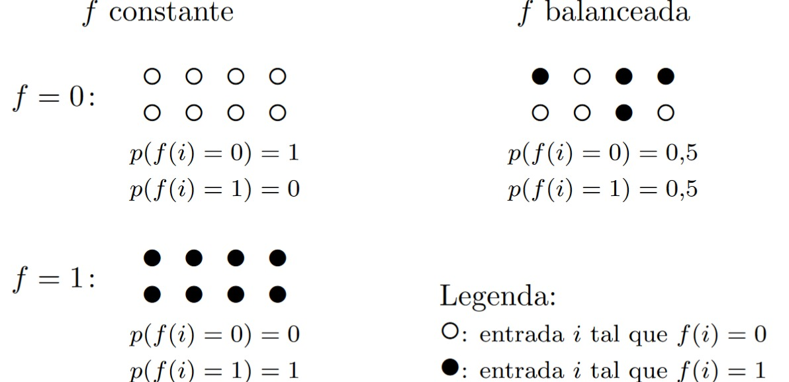
A primeira avaliação \(f(i_1)\) não traz mais informação para distinguir entre constante e balanceada.
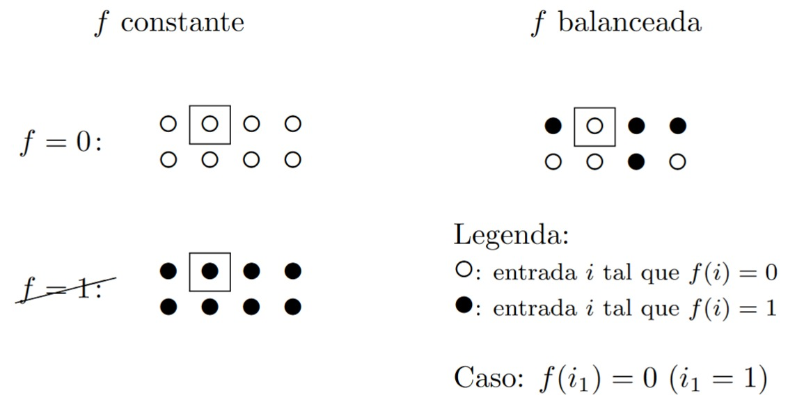
A segunda aplicação, se resultar \(f(i_2) \neq f(i_1)\), já resolve com certeza que \(f\) é balanceada.
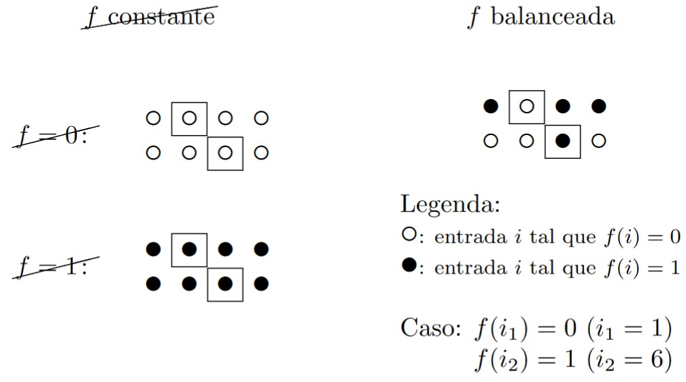
Se o resultado for \(f(i_2) = f(i_1)\), tende-se a pensar que \(f\) seria constante e a probabilidade de se estar errado é a probabilidade de tirar duas saídas iguais aleatoriamente numa função balanceada, ou seja, \(P_e = 1 \cdot 0,\!5 = 0,\!5\).
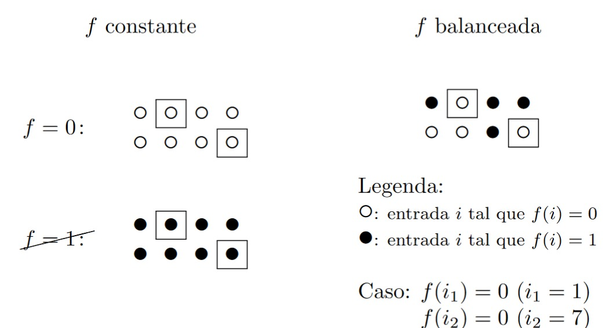
Na terceira etapa, caso \(f(i_3) \neq f(i_2)\), resolve-se com certeza que \(f\) é balanceada e caso \(f(i_3) = f(i_2)\), conclui-se pela opção constante com probabilidade de erro igual a \(P_e = 1 \cdot 0,\!5 \cdot 0,\!5 = 0,\!25\), correspondente à probabilidade de que, numa função balanceada, tenha-se o mesmo resultado para 3 entradas sorteadas aleatoriamente com igual probabilidade.
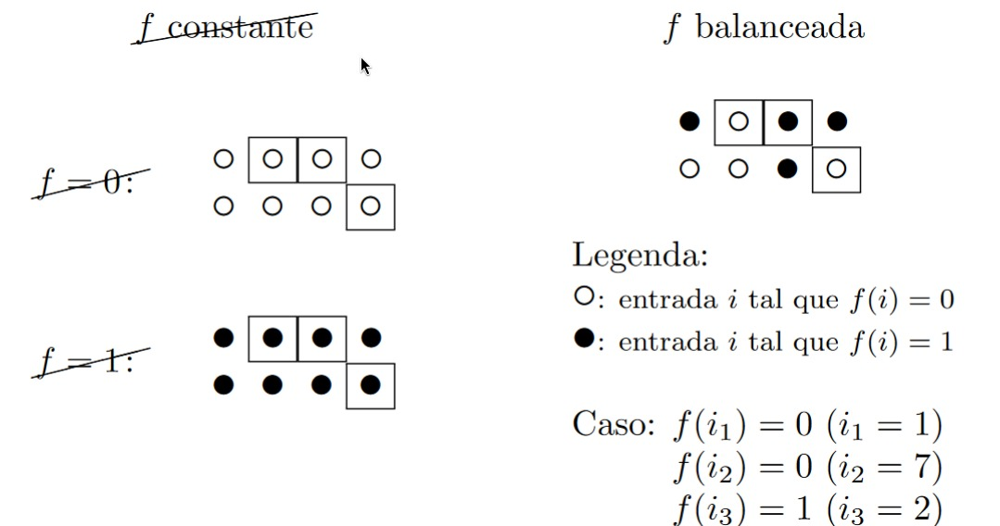
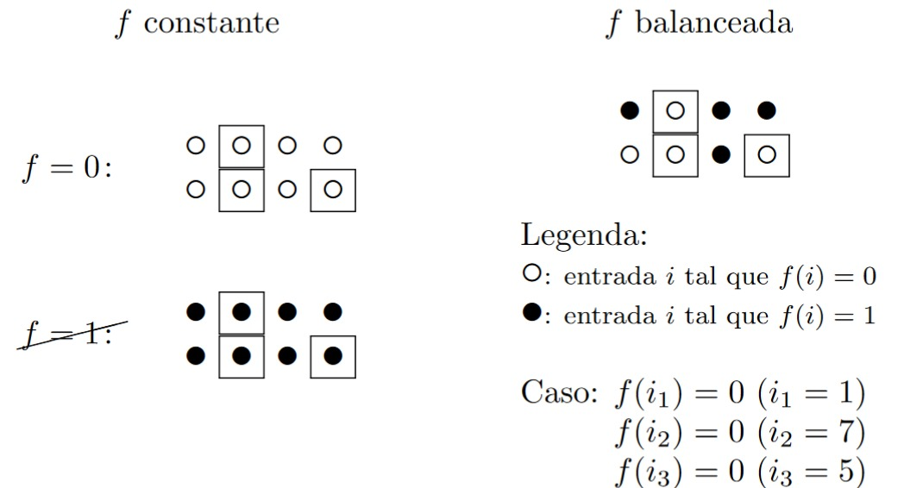
Seguindo essa ideia, na \(m\)-ésima aplicação de \(f\), se ocorrer \(f(i_m) \neq f(i_{m-1})\), conclui-se com certeza a opção `\(f\) é balanceada’ e se \(f(i_m) = f(i_{m-1})\), pode-se concluir que ``\(f\) é constante’’ com probabilidade de erro
Para uma probabilidade de erro \(P_e < 1/2\) na decisão, deve-se repetir o algoritmo até que a probabilidade de erro \(P_{e,m} = 1/2^{m-1}\) satisfaça
Se forem \(m=3\) aplicações, a probabilidade de erro será limitada por \(\varepsilon = 1/2^{m-1} = 0,\!25 < 0,\!5\), como visto anteriormente.
Algoritmo de Deutsch#
O Algoritmo de Deutsch é um dos primeiros algoritmos quânticos conhecidos, proposto por David Deutsch em 1985. Embora resolva um problema que não haja uma implementação direta, sua importância é histórica e conceitual, pois foi a primeira demonstração de que um computador quântico poderia superar um computador clássico para uma tarefa específica. O algoritmo serve como uma demonstração para introduzir conceitos-chave da computação quântica.
O algorítmo de Deutsch resolve parcialmente o problema de Deutsch-Jozsa, resolvendo um problema artificial de complexidade mínima (envolvendo uma função de um único bit).
Considere que \(f\) \({(f : {0,1} →{0,1})}\) seja dada por meio do oráculo de fase. O algoritmo de Deutsch para decidir se \(f\) é constante \({(f(0) = f(1))}\) ou balanceada \({(f(0) \neq f(1))}\) é dado pelo procedimento abaixo.
\(\textbf{Entrada:}\) \(O_\text{F}(f) = O\) \ \ (oráculo de fase associado à função booleana \(f\))
Procedimento:
\(\textbf{Saída:}\) Probabilidade da medida do primeiro qubit resultará em:
Portanto, se o estado após a medida na base \(\mathcal{X}\) for \(\ket{0}\), então decide-se que \(f\) é constante. E se o estado após a medida for \(\ket{1}\), decide-se que \(f\) é balanceada.
Circuito
Notação:
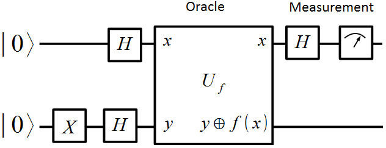
Observação: Nessa imagem vemos a inicialização de ambos os qubits em \({\ket{0}}\) e a aplicação da porta \(X\) no 2° qubit, havendo a mesma aplicação que inicializar o sistema com dois qubits em \({\ket{1}}\).
Análise detalhada do alogorítmo:
Na etapa 1, aplica-se \(H\) em ambos qubits, resultando em:
A segunda etapa é caracterizada pela aplicação do oráculo de fase, fornecendo:
Por final, a aplicação de \(H\) no primeiro qubit resulta em:
Caso a função seja constante é fornecido, após a medição:
E caso ela seja balanceada o termo sobrevivente na função é
Simulação do algorítimo de Deutsch#
Para simular o algorítimo de Deutsch usaremos a línguagem Ket de computação quântica, para isso precisamos ter ela instalada, caso não possua o pacote instalado rode o seguinte código:
pip install ket-lang
Com a biblioteca instalada, importa-se para ser usada dentro do seu código:
from ket import *
Implementaremos dois oráculos para o Algoritmo de Deutsch:
Um oráculo constante, onde \(f(0) = f(1)\).
Um oráculo balanceado, onde \(f(0) \not = f(1)\).
Em seguida, testaremos esses oráculos no algoritmo completo de Deutsch para verificar se o algoritmo consegue distinguir corretamente entre as duas categorias (constante ou balanceado) com uma única chamada ao oráculo
# Exemplo de oráculo constante
def constant_oracle(qubits):
I(qubits[1]) # Apenas uma operação identidade
# Exemplo de oráculo balanceado
def balanced_oracle(qubits):
CNOT(qubits[0], qubits[1]) # CNOT com controle no primeiro qubit e alvo no segundo
Agora implementaremos o algoritmo de Deutsch, utilizando esses oráculos que criamos
def deutsch():
# Inicialização do processo e alocação de qubits
p = Process()
qubits = p.alloc(2)
# Configuração inicial: |0⟩|1⟩
X(qubits[1])
# Aplicação de Haddamard em ambos os qubits -> Estado: |+⟩|−⟩
H(qubits)
# Aplicação do oráculo
balanced_oracle(qubits) # Troque por constant_oracle para testar o outro oráculo
# Aplicação de Haddamard no primeiro qubit
H(qubits[0])
# Medição do primeiro qubit
results = measure(qubits[0]).get()
# Finalização do processo
if results == 0:
print("A função é constante.")
else:
print("A função é balanceada.")
deutsch()
A função é balanceada.
Exercício:
Implemente outros oráculos quânticos possíveis, um para função constante e um para função balanceada, para o algorítmo de Deutsch
Algoritmo de Deutsch - Versão Simplificada#
O algoritmo de Deutsch na versão simplificada determina se uma função binária \({ f: \{0,1\} \to \{0,1\} }\) é constante ou balanceada usando apenas 1 qubit e uma única consulta ao oráculo.
Oráculo de Fase
Na versão simplificada, usamos um oráculo de fase que age como:
\({ O_f|x⟩ = (-1)^{f(x)}|x⟩ }\)
Procedimento:
\(\textbf{Saída:}\) Probabilidade da medida do primeiro qubit resultará em:
Portanto, se o estado após a medida na base \(\mathcal{X}\) for \(\ket{0}\), então decide-se que \(f\) é constante. E se o estado após a medida for \(\ket{1}\), decide-se que \(f\) é balanceada.
Circuito
Notação:
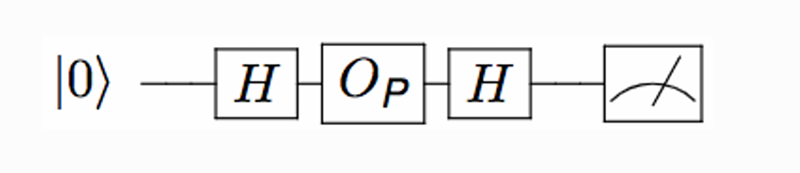
Análise detalhada do alogorítmo:
Na etapa 1, aplica-se \(H\) no qubit, resultando em:
A segunda etapa é caracterizada pela aplicação do oráculo de fase, fornecendo:
Por final, a aplicação de \(H\) no qubit resulta em:
Caso a função seja constante é fornecido, após a medição:
E caso ela seja balanceada o termo sobrevivente na função é
Simulação do algorítimo de Deutsch Simplificado#
Para simular o algorítimo de Deutsch Simplificado usaremos a línguagem Ket de computação quântica, para isso precisamos ter ela instalada, caso não possua o pacote instalado rode o seguinte código:
Faremos o mesmo exemplo realizado com o Algoritmo de Deutsch, implementaremos dois oráculos para o Algoritmo de Deutsch:
Um oráculo constante, onde \(f(0) = f(1)\).
Um oráculo balanceado, onde \(f(0) \not = f(1)\).
Em seguida, testaremos esses oráculos no algoritmo completo de Deutsch para verificar se o algoritmo consegue distinguir corretamente entre as duas categorias (constante ou balanceado) com uma única chamada ao oráculo
# Exemplo de oráculo constante
def constant_oracle(qubits):
I(qubits) # Apenas uma operação identidade
# Exemplo de oráculo balanceado
def balanced_oracle(qubits):
Z(qubits) # Porta Z para inverter a fase
Agora implementaremos o algoritmo de Deutsch, utilizando esses oráculos que criamos
def deutsch():
# Inicialização do processo e alocação de qubit
# Configuração inicial: |0⟩
p = Process()
qubits = p.alloc()
# Aplicação de Haddamard em ambos os qubits -> Estado: |+⟩
H(qubits)
# Aplicação do oráculo
balanced_oracle(qubits) # Troque por constant_oracle para testar o outro oráculo
# Aplicação de Haddamard no primeiro qubit
H(qubits)
# Medição do primeiro qubit
results = measure(qubits).get()
# Finalização do processo
if results == 0:
print("A função é constante.")
else:
print("A função é balanceada.")
deutsch()
A função é balanceada.
Exercício:
Implemente outros oráculos quânticos possíveis, um para função constante e um para função balanceada, para o algorítmo de Deutsch Simplificado
Algoritmo de Deutsch-Jozsa#
Para resolver o problema de Deutsch-Jozsa com um algoritmo quântico, é necessário ter uma versão quântica da função booleana \(f\), dada como oráculo, isto é, dada como uma caixa preta em que não se pode visualizar a subrotina que calcula \(f\).
Considere que \(f\) seja dada por meio do oráculo de fase. O algoritmo de Deutsch-Jozsa para decidir se \(f\) é constante ou balanceada é dado pelo procedimento abaixo.
\(\textbf{Entrada:}\) \(O_\text{F}(f) = O\) \ \ (oráculo de fase associado à função booleana \(f\))
Procedimento:
\(\textbf{Saída:}\) Probabilidade da medida de \(\ket{\psi_2}\) resultar em \(\ket{+}^{\otimes n}\) é
Portanto, se o estado após a medida na base \(\mathcal{X}\) for \(\ket{+}^{\otimes n}\), então decide-se que \(f\) é constante. E se o estado após a medida for qualquer outro, decide-se que \(f\) é balanceada.
Circuito Notação compacta:
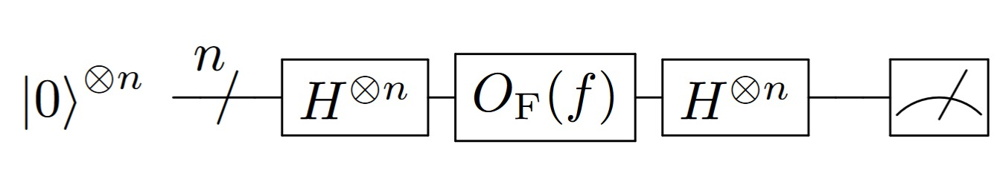
Notação expandida:
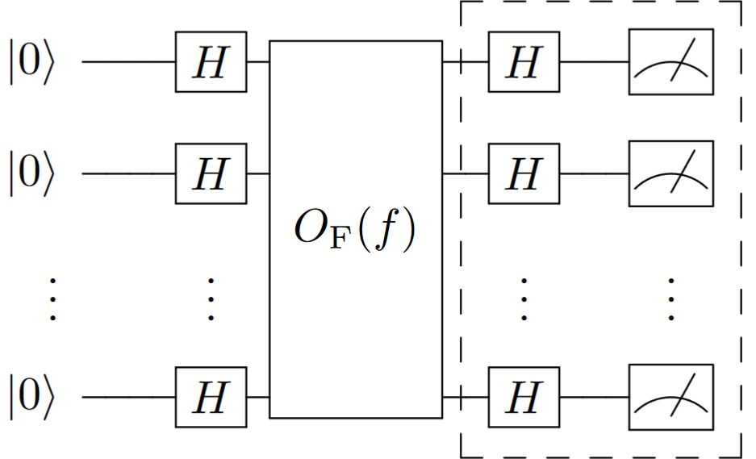
Observação: A porção destacada na figura corresponde à medição na base \(\mathcal{X}\) feita a partir da medição na base computacional. De fato, o operador de Hadamard realiza mudança de base de \(\mathcal{X}\) (base girada) para \(\mathcal{I}\) (base computacional), de forma que o resultado medido na base computacional corresponde a uma medição na base \(\mathcal{X}\). A figura ilustra a medição na base girada feita em função da medição na base computacional.
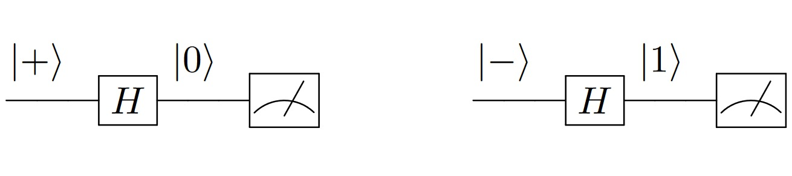
Análise detalhada do algoritmo:
Na etapa 1, aplica-se \(H\) para cada qubit de entrada, resultando em:
em que \(\mathbb{B}_n\) representa o conjunto de todas as palavras de \(n\) bits. Isto é,
EXERCÍCIO
Observação: or vezes é útil fazer a identificação entre vetores de bits e números inteiros sem sinal, para simplificar a notação. Por exemplo, \(0 = 0\ldots000\), \(1 = 0\ldots001\), \(2 = 0\ldots010\), \(3 = 0\ldots011\) e assim por diante, até \(2^n-1 = 1 \ldots 111\).
A aplicação do oráculo na etapa 2 fornece:
Se a função for constante, o fator \((-1)^{f(x)}\) se tornará um sinal global \(+\) ou \(-\), que essencialmente não altera o estado anterior.
EXERCÍCIO
A última etapa consiste na medição na base girada \(\mathcal{X}\). Para realizar essa medida, pode-se aplicar \(H\) a todos os qubits e medir na base computacional. Calculando a probabilidade de se obter \(\ket{+}^{\otimes n}\), consegue-se:
Caso a função seja constante, a última equação fornece
E caso a função seja balanceada, metade das parcelas contribui com \(1\) e a outra metade com \(-1\), portanto
A probabilidade \(P\) de se obter \(\ket{+}^{\otimes n}\) é dada pelo módulo ao quadrado do resultado obtido, logo
Dessa forma, decide-se por ‘\(f\) é constante’ se a medida resultar no estado \(\ket{+}^{\otimes n}\) e por `\(f\) é balanceada’, se resultar em um estado diferente. Esse teste é realizado no algoritmo por uma mudança de base, realizada pela porta Hadamard, e uma medição na base computacional.
Comparação de desempenho#
A tabela abaixo traz a comparação entre o desempenho dos algoritmos clássico determinístico, clássico probabilístico e quântico.
Essa comparação entre o desempenho clássico e quântico, no entanto, não pode ser considerada muito seriamente. Há que se levar em conta que são arquiteturas diferentes: aplicar uma operação \(f\) clássica (correspondente a chamar uma subrotina ``caixa preta’’) e aplicar o oráculo de fase \(O_\text{F}(f)\) em um circuito quântico são coisas distintas. Não é claro que essas operações têm custo computacional equivalente para que sejam comparadas diretamente como na tabela apresentada. Por outro lado, como comparação simplificada, essa análise serve para se ter uma noção dos ganhos que a Computação Quântica poderia trazer em relação a Computação Clássica.
Em relação ao algoritmo clássico determinístico, o algoritmo quântico apresenta ganho exponencial em desempenho. Já em relação ao algoritmo clássico probabilístico, o desempenho é semelhante.
Simulação do algorítimo de Deutsche-Jozsa#
Para simular o algorítimo de Deutsche-Jozsa usaremos a línguagem Ket de computação quântica, para isso precisamos ter ela instalada, caso não possua o pacote instalado rode o seguinte código:
Primeiro devemos definir o oráculo. O oráculo é uma função que representa a função f(x) que queremos testar. Para este exemplo, consideraremos uma função balanceada que retorna 0 para entradas com número par e 1 para entradas com número ímpar.
def oracle(qubits, auxiliar):
# Aplica a porta X ao qubit auxiliar se a entrada tiver um número ímpar
CNOT(qubits[-1], auxiliar)
Então, implementa-se o algorítimo de Deutsche-Jozsa:
def deutsch_jozsa(n):
# Cria um processo quântico
p = Process()
# Aloca n qubits para a entrada e 1 qubit auxiliar
qubits = p.alloc(n)
auxiliar = p.alloc()
# Inicializa o qubit auxiliar no estado |1⟩
X(auxiliar)
# Aplica a porta Hadamard a todos os qubits
H(qubits + auxiliar)
# Aplica o oráculo
oracle(qubits, auxiliar)
# Aplica a porta Hadamard aos qubits de entrada
H(qubits)
# Mede os qubits de entrada
result = measure(qubits).get()
# Verifica se todos os resultados são 0 ou 1
if result == 0 or result == 2**n - 1:
print("A função é constante.")
else:
print("A função é balanceada.")
deutsch_jozsa(2)
A função é balanceada.
| Ket | v0.9.2 |
|---|---|
| Libket | v0.6.0 |
| KBW | v0.4.2 |